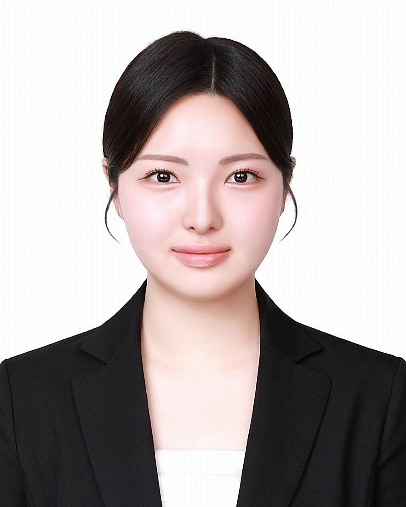

2027.02 졸업예정
Data Scientist · ML Researcher
다룬 데이터
텍스트부터 라이다 · 이미지 · 공공데이터 · 센서 측정 · 직접 생성한 모의 데이터까지. 점(●)은 이 페이지의 대표 프로젝트에 쓴 데이터이고, 누르면 해당 프로젝트로 이동합니다.
대표 프로젝트
자율주행 트랙별 경험
자율주행시스템학과 융합전공 · ROS · Autoware 학부 실습. 트랙별로 직접 해 본 것만 적었습니다.
정답 토픽 · 전이를 아는 모의 말뭉치를 생성해 복원 성능을 Ground-truth와 비교했습니다(환경 5종, 10개 seed 모두 정확). 3D 객체 탐지에서는 점추정 대신 베이지안 샘플링 최적화기를 비교했습니다.
초과 용량 · 많은 토픽 · 적은 문서 · 대규모 미니배치 잡음을 환경마다 하나씩 키워 샘플러가 실패하는 조건을 확인했습니다. 잡음 문서 50개 조건은 Perplexity로 비교했습니다.
임베디드 제약을 전제로 3.8B sLLM을 고르고 LoRA로 파라미터의 0.01%만 학습해 평균 응답 1.145초를 얻었습니다. QLoRA 4bit 양자화 + CAG 결합도 지표 6종으로 비교했습니다.
연구 · 논문
KCI 등재지 제1저자 논문 2편 게재 · 투고 예정 2편(SCI급 1편 포함) · 한국연구재단 석사과정생연구장려금 연구책임자
연구 과제
| 과제 | 역할 | 과제번호 · 기간 |
|---|---|---|
| TNTM을 활용한 임베디드 시스템 문서의 주제 흐름 분석 · 성과 P16 | 한국연구재단 석사과정생연구장려금 · 연구책임자(PI) | RS-2025-25437035 · 2025–2026 |
| 베이지안 추론을 위한 적응적 가중 SGMCMC 알고리즘 | 한국연구재단 · 참여연구원 | RS-2024-00352792 · 2024–2027 |
| 초격차산업기반 표준전문인력양성 | KIAT · 참여연구원 · 표준학 융합전공 | RS-2025-02215617 · 2025–2026 |
수상
| 대회 | 수상 | 프로젝트 | 연도 |
|---|---|---|---|
| 한국자료분석학회 하계학술발표대회 · 포스터논문 부문 | 장려상 | Fixed-K Shrinkage BNTM with AWSGLD Inference · 제1저자 · 이후 추론기를 AWSGHMC로 바꾼 버전 P03은 SCI급 투고 예정 | 2026 |
| 고려대학교 통계학술제 | 최우수상 | 택시 수요 분석을 통한 택시 서비스 개선 방안 마련 · 팀 3명 | 2023 |
| 미래모빌리티 및 세종지역혁신 아이디어 공모전 | 장려상 | Smart Green-STOP · 압전 하베스팅 · 태양광 자가발전 스마트 정류소 아이디어 · 팀 2명 · 3D 구현 담당 | 2023 |
전체 프로젝트17건
검은 번호표는 위 대표 프로젝트입니다. 카드를 누르면 상세 내용으로 이동합니다.
역량
파란 글씨는 논문 · 프로젝트에서 직접 구현한 알고리즘입니다.
- 확률적 추론샘플러 직접 구현
- AWSGLD · AWSGHMC · MH-within-Gibbs · SAMC · SGLD · SGHMC · SGNHT비교 기준 Adam · SGD. SAMC는 순수 R · Rcpp · reticulate 3종 백엔드로 각각 재구현.
- NLP · LLM · 딥러닝
- PyTorch · TensorFlow · Transformers · LoRA · QLoRA · 토픽 모델링 · 텍스트 마이닝 · 임베딩 · RAG · LangChain
- 언어 · 통계
- Python · R · SQL · Pandas · NumPy · SciPy · statsmodels · scikit-learn회귀 · 분류 · 군집 · 시계열 · 앙상블 · 베이지안 · 유의성 검정 · 변수 선택 · 범주형 자료 분석
- 시각화 · 공간
- QGIS · matplotlib · seaborn공간 데이터 병합 · 자치구 단위 분포 시각화 · EDA
- 환경 · 협업 · 자격
- Git · GPU Computing (CUDA) · MySQL · ER 모델링 · Rcpp · reticulate · ROS · Autoware (학부 실습)ADsP 데이터분석 준전문가 (2023.11)
이력
연구 주제
- SGMCMC 샘플러 설계 · 베이지안 추론
- 전이 네트워크 토픽 모델 (TNTM · BNTM)
- LoRA 기반 sLLM 파인튜닝 · RAG
- LightGCN 추천 실험 · 국제 표준 데이터 정규화
현재 BNTM 확장 연구 진행 중
- 2025.03 – 현재
- 고려대학교 일반대학원 빅데이터사이언스학과 석사과정2027.02 졸업예정
- 2026
- 한국자료분석학회 하계학술발표대회 포스터논문 장려상Fixed-K Shrinkage BNTM with AWSGLD Inference · 김다연, 전수영 · KDAS 발표 26-30호 · 이후 AWSGHMC 버전(P03)으로 SCI급 투고 예정
- 2025.01
- 미국 UNLV 4주 글로벌 연수 · CES 2025 참관임베디드 AI · 머신러닝 과목 수강 · 팀 실습 · 라스베이거스
- 2023.12 – 2024.03
- JERESFARM 데이터 분석 인턴스마트팜 도메인 · 팀 2명 · 센서 데이터 시계열 분석 및 공공 데이터 기반 작물 분류
- 2023
- 고려대학교 통계학술제 최우수상택시 수요 분석을 통한 택시 서비스 개선 방안 마련 · 빅데이터사이언스학부 2023학년도 2학기
- 2023
- 미래모빌리티 및 세종지역혁신 아이디어 공모전 장려상Smart Green-STOP · 친환경 스마트 정류소 · 팀 2명 · 세종특별자치시
- 2021.03 – 2025.02
- 고려대학교 세종캠퍼스 빅데이터사이언스학부 학사자율주행시스템학과 융합전공
GitHub 저장소
공개 저장소 5개. BNTM 구현은 논문 게재 후 공개합니다.
bntm-topic-model
문장 토픽 전이 네트워크 모델(BNTM) 및 AWSGHMC 샘플러 구현
Python · MCMC · 토픽 모델링
게재 후 공개llmrec-metadata-standard
LLM 메타데이터 국제 표준(ISO 3166-1, BCP 47) 정규화 및 적합률 진단
Python · 메타데이터 · LLM
GitHubGCIoU-SGMCMC-3D-Detection
KITTI 기반 3D 객체 탐지 최적화기 5종 비교 및 SGMCMC 추론
Python · PyTorch · 3D Detection · CUDA
GitHubSONY_Chatbot
제품 설명서 한국어 RAG 질의응답 (bge-m3 + Chroma + KoAlpaca)
Python · RAG · LangChain · Chroma
GitHubmcmc-r-packages
SAMC 알고리즘 R 패키지화 (순수 R · Rcpp · reticulate 3종)
R · Rcpp · MCMC · 패키지
GitHubPykachu-Volleyball
표 기반 Q-learning 에이전트 (gymnasium, 18개 이산 행동) · Frog-Slayer 환경 포크
Python · 강화학습 · gymnasium · Q-learning
GitHub연락하기
메일로 연락 주세요. 이력서와 경력기술서는 아래에서 받을 수 있습니다.